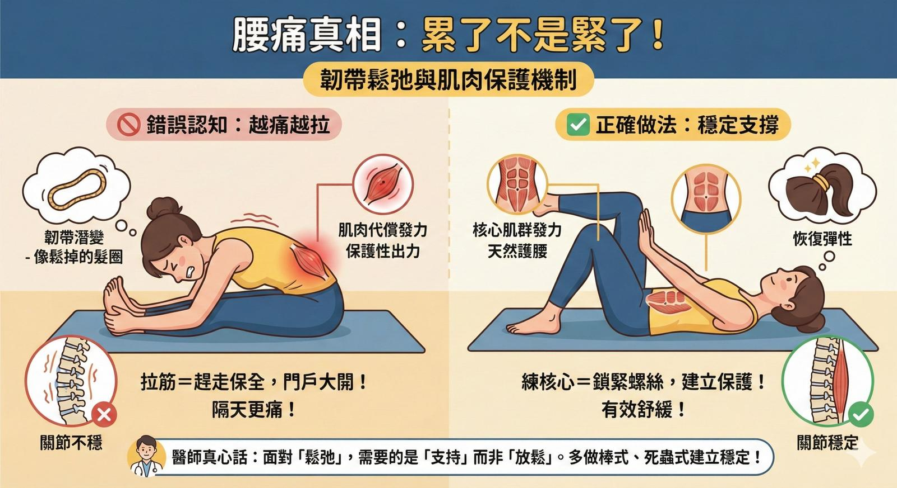

越痛越拉？其實你的腰可能只是「累了」而不是「緊了」
【越痛越拉？其實你的腰可能只是「累了」而不是「緊了」】🧘♀️
「醫師，我腰好酸，是不是要多拉筋把它鬆開？」
這是在診間最常聽到的問題之一。
古代習俗有言：「筋長一寸，壽延十年」，這觀念本身沒錯。但結合中醫與現代生物力學的視角，我必須提醒大家：拉筋並非拉越長越久就越好，有一種「緊」，是不能隨便亂拉的。
延續前一篇談到的LMR保護機制，今天聊聊為什麼「拉筋」不是拉越長越久就越好，有時候拉筋反而會隔天更酸痛。
💡 韌帶，就像一條「髮圈」
想像一條常用的髮圈，它是很有彈性的。但如果我們長時間把它拉到最底（例如久坐彎腰、長期駝背），久了它會暫時失去彈性，變得有點像「鬆掉的舊髮圈」。這在醫學上叫做『韌帶潛變 (Creep)』。
這時候，人體有個聰明的保護機制叫做 LMR (韌帶肌肉反射)：
✅ 正常運作： 韌帶負責告訴大腦「關節位置」。
⚠️ 當韌帶疲乏（鬆掉）時： 因為韌帶暫時抓不住骨頭，大腦為了保護脊椎不亂晃，會命令旁邊的肌肉「加班收縮」來幫忙抓緊。
👉 關鍵來了： 你感覺到的「腰部酸痛、緊繃」，往往不是因為肌肉縮短了，而是因為肌肉正在「保護性出力」。
🚫 為什麼這時候「拉筋」會越拉越傷？
如果你這時候還去拼命做極限角度的伸展：
強迫保全下班： 你把正在保護關節的肌肉強行拉鬆，肌肉放鬆了，當下你會覺得「哇！好舒服、好開」。
門戶大開： 但這時候韌帶還是鬆的（髮圈還沒縮回來），肌肉又被你拉到不出力，你的關節就處於「無政府狀態」。
加倍奉還： 等你睡一覺起來，大腦發現關節晃動得更厲害，為了保護你，它會下令肌肉「更用力地抓緊」。
這就是為什麼很多人覺得：「拉筋當下很爽，但隔天腰反而覺得空空的、更無力、甚至更酸。」
🧘♀️ 給瑜伽愛好者的小建議：
瑜伽是很棒的身心運動，但建議您從「伸展」進化到「穩定」，先求穩定，再伸展。
不要「掛」在極限角度： 當身體疲勞時，避免長時間停留在讓關節感到「快斷掉」的拉伸角度。
增加支撐： 試著在動作中優先注重軀幹中軸核心的控制（收小腹、夾臀），用肌肉的力量去支撐關節，而不是單純靠韌帶去掛著。
🔈 關於「喀」一聲的關節聲響
另外，也有不少朋友喜歡追求整復時的那聲「喀」音，覺得有聲音才算有通。
適度的徒手調整，確實能幫助受限的關節恢復活動。但如果您發現自己「依賴性」很高——例如剛調整完很舒服，但過兩天又覺得卡住、想再去「喀」一下。
這通常代表您的關節其實「很靈活（鬆）」，只是缺乏力量維持在對的位置。就像一顆螺絲鎖不緊，單純把它轉回去，它很快又會滑出來。這時候，您需要的不是更多的調整，而是更多的核心訓練。
👨⚕️ 醫師的真心話：面對「鬆弛」，更需要的是支持
面對這種「韌帶鬆弛」引起的酸痛，我們要做的不是放鬆它，而是支持它！
急性酸軟期： 先暫停極限伸展，給韌帶一點時間恢復彈性（讓髮圈休息一下）。
建立天然護腰： 多做棒式、死蟲式等核心運動，把肌肉練穩，就像幫鬆掉的髮圈加上一層堅固的外殼。
專業治療： 如果真的反覆疼痛，透過專業醫療評估，結合中醫針灸、乾針或徒手等方式，促進韌帶組織的強韌度，這才是「治本」的關鍵。
🏠【簡單的回家小功課：喚醒你的天然護腰】
既然不能亂拉筋，那該怎麼舒緩？推薦大家一個安全又有效的動作：「死蟲式 (Dead Bug) - 靜態對抗版」。
這動作就像是幫身體「重新鎖緊螺絲」，不會彎折脊椎，非常適合腰部不穩的人。
平躺： 背部平貼瑜伽墊（腰部貼平墊上，不要懸空）。
抬腿： 雙腳屈膝抬起，大腿跟地面垂直（像翻過來的桌子）。
對抗： 雙手掌撐住膝蓋。
發力： 「手用力推膝蓋，膝蓋用力頂手」，雙方互不相讓，身體位置都不動。
呼吸： 維持這個對抗的力量 5~10 秒，正常呼吸不要憋氣，感覺腹部深層有點酸酸緊緊的。
次數： 重複 5~10 次。
🔔【溫馨小提醒】
早起後的 30 分鐘最關鍵： 起床後千萬不要馬上做「彎腰摸地」或「劇烈扭腰」**的動作。給身體一點時間暖機。
久坐族請設鬧鐘： 每 20-40 分鐘起來走動一下。不要讓韌帶維持在同一個長度太久，避免它產生「潛變（鬆掉）」。
聆聽身體的聲音，有時候它需要的不是拉長，而是擁抱（穩定）！ 💪
本文內容僅供健康衛教資訊分享，旨在提供一般大眾對於脊椎保健的觀念，並非醫療診斷或治療建議。每位患者的身體狀況、受傷機制與疼痛成因皆不相同，若您有長期疼痛、嚴重不適或神經學症狀（如手腳麻木無力），請務必親自諮詢專業醫師或醫療人員進行個別化評估與治療。請勿在未經專業指導下，勉強進行會造成疼痛的動作。
#中醫 #徒手治療 #瑜伽 #拉筋 #下背痛 #核心穩定 #LMR #韌帶潛變 #精準治療
太初中醫診所 東門中醫
中醫師 黃彥鈞
